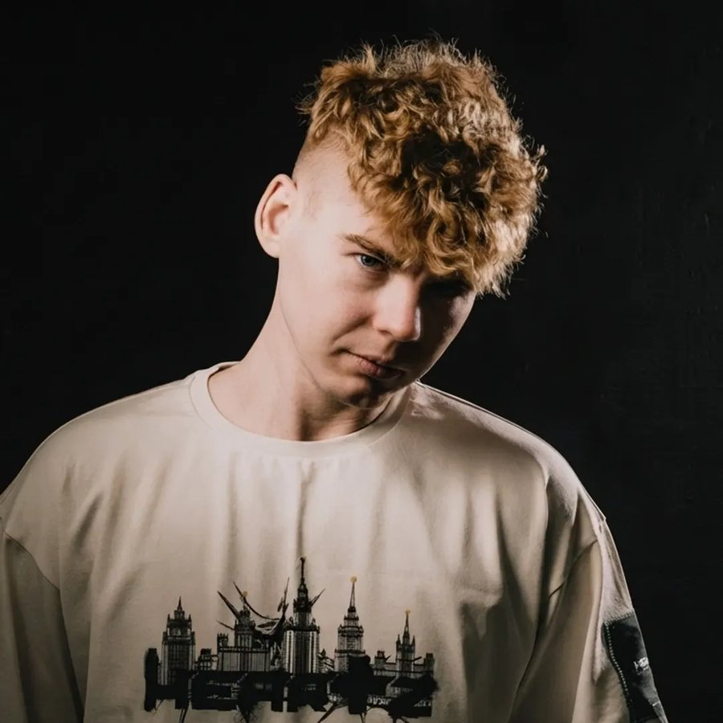

ХедлайнерS.A.Y.
techno · hard techno · breakbeat · rave
Диджей, продюсер, резидент BLAASH и сооснователь лейбла BRAAT. Альбомы «MY NAME IS» и «MOSHPIT: VOL.1», синглы «Senta» и «Tariki» перевалили за миллион прослушиваний, ремикс для Gorilla Zippo.
Зачем зовёмСамый собирающий резидент BLAASH: у него народная любовь, на его сеты идут отдельно. Ядро вечера, от него строится весь состав.
185 тыс. слушателей в месяц11,6 тыс. в InstagramSIGMA Festival 2026, главная сцена